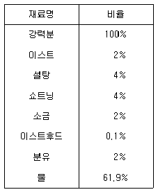
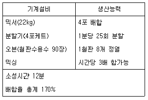
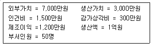

제과기능장 (2002-04-07 기출문제)
1과목: 임의 구분
1. 유화쇼트닝 60%를 사용하는 옐로레이어 케이크를 초콜릿 32%를 사용하는 초콜릿 케이크로 바꾸려 한다. 옐로레이어의 유화쇼트닝은 얼마가 되는 것이 좋은가?
- 48 %
- 54 %
- 60 %
- 66 %
(정답률: 알수없음)

2. 스펀지 케이크 제조시 계란을 600g 사용하는 원래 배합을 변경하여 유화제를 24g 사용하고자 한다. 이 때 필요한 계란양은?
- 720g
- 600g
- 576g
- 480g
(정답률: 알수없음)
3. 고율 배합 케이크용 밀가루의 가장 적당한 pH는?
- 약 4.0
- 약 5.2
- 약 8.8
- 약 9.2
(정답률: 알수없음)
4. 일반 스펀지 케이크(Sponge cake)의 적당한 pH는?
- 5.5 - 5.8
- 6.0 - 6.2
- 7.3 - 7.6
- 8.9 - 9.2
(정답률: 73%)
5. 퍼프 페이스트리 제조시 굽는 동안 유지가 흘러 나오는 이유가 아닌 것은?
- 밀어펴기가 부적절하므로
- 강한 밀가루를 사용하므로
- 과도한 밀어펴기를 하므로
- 오븐 온도가 너무 낮으므로
(정답률: 85%)
6. 손으로 만드는 케이크 도넛이 튀김 중에 유지를 많이 흡수하는 이유가 아닌 것은?
- 생지 온도가 높다.
- 믹싱이 부족하다.
- 튀김기름 온도가 낮다.
- 튀김 시간이 길다.
(정답률: 64%)
7. 옐로 레이어 케이크 제조시 밀가루 100%, 설탕 100%, 쇼트닝 100% 사용시 계란 사용량은 어느 정도인가? (단, 우유는 사용하지 않는다.)
- 55%
- 75%
- 92%
- 110%
(정답률: 46%)
8. 초콜릿 케이크 제조시 속색을 진하게 하기 위한 조치는?
- 유지의 사용량을 증가한다.
- 설탕의 사용량을 증가한다.
- 계란의 사용량을 증가한다.
- 탄산수소나트륨의 사용량을 증가한다.
(정답률: 알수없음)
9. 엔젤푸드 케이크 제조시 흰자에 넣어 튼튼한 머랭을 만드는 재료와 거리가 먼 것은?
- 주석산칼륨
- 과일즙
- 소금
- 수산화나트륨
(정답률: 알수없음)
10. 엔젤푸드 케이크의 배합표 작성시 재료의 사용범위가 틀린 것은?
- 박력분 100%
- 흰자 40 - 50%
- 설탕 30 - 42%
- 주석산크림 0.5 - 0.625%
(정답률: 알수없음)
11. 엔젤푸드 케이크를 만들 때 가장 알맞는 반죽 방법은?
- 노른자와 흰자에 설탕을 반씩 넣고 거품을 올린다.
- 흰자에 설탕을 전부 넣고 거품을 내기 시작한다.
- 흰자 무게의 60∼70% 설탕을 거품과정 중에 넣는다.
- 중탕법으로 흰자의 거품을 올린다.
(정답률: 80%)
12. 파이 껍질(pie crust) 배합에 관한 설명 중 맞는 것은?
- 파이 반죽의 온도는 약간 높은 편이 좋다.(28℃정도)
- 반죽을 부드럽게 하기 위해 액체유를 쓰는 게 좋다.
- 반죽은 배합 후 바로 사용하여야 한다.
- 급수 사용량은 비교적 적게 하는 편이 좋다.
(정답률: 70%)
13. 반죽형 쿠키를 만들 때 퍼짐이 결핍되는 경우는?
- 반죽이 알칼리성인 경우
- 믹싱이 지나친 경우
- 오븐 온도가 너무 낮은 경우
- 설탕 입자가 너무 고운 경우
(정답률: 54%)
14. 밀가루 100% (= 600g)와 계란 150%를 사용하는 시퐁 케이크에서 흰자의 사용량은?
- 300 g
- 600 g
- 900 g
- 1,200 g
(정답률: 42%)
15. 마지팬을 만들 때 필요한 기본 재료가 아닌 것은?
- 아몬드
- 물
- 전분
- 설탕
(정답률: 59%)
16. 다음과 같은 배합표에 의한 제품중량 900g의 식빵 1200개의 주문을 받았다. 중량 미달 제품의 발생을 염려하여 910g의 제품을 만들기로 하였다면 소요되는 소맥분은 얼마인가? (단, 발효손실 2%, 소성손실 12%만 고려하며 불량품은 없는 것으로 본다. 또한 소맥분 1kg 미만은 1kg으로 계산한다.)

- 536 kg
- 720 kg
- 942 kg
- 1080 kg
(정답률: 알수없음)
17. 제빵시 적량보다 많은 설탕을 사용하였을 때 결과 중 잘못된 것은?
- 이스트 사용량을 증가시키지 않는 한 부피가 적다.
- 설탕 사용량이 많을수록 색상이 검다.
- 껍질이 두껍고 거칠다.
- 세포의 파괴로 회색 또는 황갈색의 속색을 나타낸다.
(정답률: 알수없음)
18. 일반 스트레이트법 식빵을 비상 스트레이트법 식빵으로 만들 때 필수적인 조치사항이 아닌 것은?
- 반죽온도를 30℃로 높임
- 수분흡수율 1% 증가
- 발효속도 증가(이스트를 2배로 증가)
- 설탕량 1% 감소
(정답률: 20%)
19. 다른 조건은 같으며 아래의 보기와 같은 사항에 관해서만 변동이 있을 때 같은 시간내에 제빵을 위해서 이스트를 다소 증가시켜 사용하지 않아도 되는 것은?
- 생지 온도를 낮게 올릴 때
- 밀가루의 숙성이 충분히 되었을 때
- 생지를 굳게 준비할 때
- 글루텐이 강할 때
(정답률: 77%)
20. 노타임 반죽법에 대한 일반적인 설명으로 틀린 것은?
- 환원제를 사용하므로 믹싱시간을 25% 정도 증가 시킨다.
- 산화제를 사용하므로 발효시간을 단축한다.
- 산화제는 -SH 결합을 -S-S- 결합으로 하여 글루텐을 강화한다.
- 1차 발효시간을 단축시키는 방법으로 사용한다.
(정답률: 20%)
2과목: 임의 구분
21. 이스트의 사용량을 감소하는 것이 좋은 경우는?
- 반죽온도가 낮은 경우
- 손 작업량이 많은 경우
- 우유 사용량이 많은 경우
- 설탕 사용량이 많은 경우
(정답률: 알수없음)
22. 스펀지 & 도우법으로 빵을 만들 때 스펀지 발효시 온도와 pH의 변화에 대한 설명으로 맞는 항목은?
- 온도와 pH가 동시에 상승한다.
- 온도와 pH가 동시에 하강한다.
- 온도는 하강하고 pH는 상승한다.
- 온도는 상승하고 pH는 하강한다.
(정답률: 알수없음)
23. 2차 발효의 가장 큰 목적은?
- 단백질과 전분의 변화
- 제품의 원하는 부피
- 보유가스빼기
- 탄력의 완화
(정답률: 100%)
24. 다음 중 2차 발효실(Proofing Room)에서 가장 좋은 조건은?
- 온도 20 - 25℃, 관계습도 85 - 90%
- 온도 33 - 43℃, 관계습도 75 - 90%
- 온도 55 - 60℃, 관계습도 75 - 80%
- 온도 65 - 70℃, 관계습도 85 - 95%
(정답률: 알수없음)
25. 제빵시 굽기 과정에서 일어날 수 있는 변화가 아닌 것은?
- 단백질과 전분의 변화
- 캐러멜화 반응
- 수분제거
- 단백질 강화
(정답률: 알수없음)
26. 식빵을 제조하는데 있어서 필수 재료가 아닌 것은?
- 밀가루
- 물
- 이스트
- 설탕
(정답률: 90%)
27. 렛다운 단계(Let down stage)까지 믹싱해도 좋은 제품은?
- 데니시 페이스트리
- 잉글리쉬 머핀
- 불란서 빵
- 식빵
(정답률: 알수없음)
28. 완제품 빵의 pH 가 다음과 같을 때 정상적인 발효로 볼 수 있는 것은?
- pH 4.5
- pH 5.0
- pH 5.7
- pH 6.7
(정답률: 46%)
29. 포장을 완벽하게 하더라도 빵제품에 노화가 일어나는 주요한 원인은?
- 빵 내부의 부위별로 수분이 이동
- 빵 표면에서 밖으로 수분이 증발
- 향의 강도가 서서히 감소
- 전분의 퇴화가 진행
(정답률: 알수없음)
30. 빵의 노화가 가장 빨리 일어나는 온도 범위는?
- -18℃ 이하
- -7∼10℃
- 13∼20℃
- 22∼27℃
(정답률: 알수없음)
31. 밀가루 전분의 중요 구조인 아밀로펙틴(amylopectin)에 대한 설명으로 틀린 항목은?
- 측쇄가 있으며 측쇄의 포도당 단위는 α -1,6결합으로 연결되어 있다.
- α -아밀라아제에 의하여 덱스트린(호정)으로 바뀐다.
- 보통 백만 이상의 분자량을 가지고 있다.
- 보통 곡물에는 아밀로펙틴이 17 - 28%정도 들어 있다.
(정답률: 37%)
32. 효소에 대한 설명으로 틀린 것은?
- 알파 아밀라아제(α -amylase)는 당화효소이다.
- 말타아제(maltase)는 맥아당을 2개의 포도당으로 분해한다.
- 리파아제(lipase)는 지방을 분해하는 효소이다.
- 펩신(pepsin)은 단백질을 분해하는 효소이다.
(정답률: 40%)
33. 밀가루의 회분함량에 대한 설명 중 틀린 것은?
- 밀가루의 정제도를 표시하기도 한다.
- 제분율이 높을수록 회분함량이 높다.
- 같은 제분율일 때 연질소맥은 경질소맥에 비해 회분 함량이 낮다.
- 회분함량이 많으면 밀가루의 색이 희어진다.
(정답률: 40%)
34. 100g의 밀가루에서 50g의 젖은 글루텐이 만들어졌다. 이 밀가루는?
- 초박력분
- 박력분
- 중력분
- 강력분
(정답률: 알수없음)
35. 다음 당류 중 상대적 감미도가 가장 낮은 것은?
- 유당
- 과당
- 자당
- 포도당
(정답률: 알수없음)
36. 튀김기름에 들어있는 유리지방산에 대한 설명으로 틀린 것은?
- 유지의 가수분해에 의하여 생성된다.
- 유리지방산이 많아지면 튀김기름에 거품이 잘 생긴다.
- 유리지방산이 많아지면 튀김기름의 발연점이 낮아진다.
- 유리지방산은 튀김기름의 유화력을 높인다.
(정답률: 30%)
37. 생크림 숙성온도와 시간으로 가장 적당한 것은?
- -2 ∼0℃ 에서 5시간 정도
- 3 ∼5℃ 에서 8시간 정도
- 8 ∼10℃ 에서 18시간 정도
- 15 ∼20℃ 에서 24시간 정도
(정답률: 알수없음)
38. 케이크 제품 제조에 있어 계란의 결합제 기능을 이용한 항목은?
- 스펀지 케이크 제조
- 초콜릿 케이크 제조
- 커스터드 크림 제조
- 머랭 제조
(정답률: 알수없음)
39. 제빵용 활성건조효모를 물에 풀어서 사용할 때 물 온도로 가장 적당한 것은?
- 10℃
- 25℃
- 40℃
- 55℃
(정답률: 55%)
40. 어떤 베이킹 파우더 17kg 중 전분이 40%이고, 중화가 (中和價)가 104일 때 산 작용제는 얼마나 들어 있는가?
- 4 kg
- 5 kg
- 10 kg
- 17 kg
(정답률: 알수없음)
3과목: 임의 구분
41. 어떤 제빵공장의 급수가 경수이기 때문에 발효가 지연되고 있다. 이 문제를 해결하는 조치로 틀린 항목은?
- 배합에 이스트 사용량을 증가시킨다.
- 맥아 첨가 등의 방법으로 효소를 공급한다.
- 이스트푸드의 양을 감소시킨다.
- 소금의 양을 소량 증가시킨다.
(정답률: 50%)
42. 건포도를 전처리(Conditioning)하여 사용할 때 필요한 27℃ 물의 사용량은?
- 건포도 중량의 12%
- 건포도 중량의 25%
- 건포도 중량의 50%
- 건포도 중량과 동량
(정답률: 82%)
43. 다음의 안정제 중 동물에서 추출되는 것은?
- 한천
- 젤라틴
- 펙틴
- 구아검
(정답률: 알수없음)
44. 밀가루의 반죽 성향을 측정하기 위해서 사용하는 기기(instrument)들 중 전분의 점성을 측정할 수 있는 것은?
- 믹소그래프(Mixograph)
- 패리노그래프(Farinograph)
- 아밀로그래프(Amylograph)
- 익스텐소그래프(Extensograph)
(정답률: 알수없음)
45. 휘핑 크림의 취급과 사용에 관한 설명 중 틀린 것은?
- 휘핑 크림의 유통 과정 및 보관에서 항상 5℃를 넘지 않도록 해야 한다.
- 냉각된 휘핑 크림의 운송도중 강한 진탕에 의해 기계적 충격을 주게 되면 휘핑성을 저하시킨다.
- 냉각을 충분히 시켜서 5℃ 이상을 넘지 않는 한도내에선 오래 휘핑할수록 부피가 커진다.
- 높은 온도에서 보관하거나 취급하게 되면 포말이 이루어 지더라도 조직이 연약하고 유청 분리가 심하게 나타날 염려가 있다.
(정답률: 알수없음)
46. 포도상구균에 의한 식중독에 대한 설명으로 틀린 것은?
- 화농성 질환을 가지고 있는 조리자가 조리한 식품에서 발생하기 쉽다.
- 독소형 식중독으로 독소는 열에 의해 쉽게 파괴되지 않는다.
- 독소는 엔테로톡신(enterotoxin)이라는 장관독이다.
- 잠복기가 느리고 식중독 중 치사율이 가장 높다.
(정답률: 40%)
47. 마이코톡신(mycotoxin)의 특징을 바르게 설명한 것은?
- 곰팡이가 생성한 독소에 의한다.
- 원인식은 지방이 많은 육류이다.
- 항생물질로 치료된다.
- 약제에 의한 치료효과가 크다.
(정답률: 82%)
48. 합성 플라스틱류에서 발생하는 화학적 식중독 물질은?
- 포름알데히드(formaldehyde)
- 둘신(dulcin)
- 베타나프톨(β -naphthol)
- 겔티아나바이올렛(gertiana violet)
(정답률: 알수없음)
49. 자외선 살균의 이점이 아닌 것은?
- 살균효과가 크다.
- 균에 내성을 주지 않는다.
- 표면 투과성이 좋다.
- 사용이 간편하다.
(정답률: 알수없음)
50. 사람의 손, 조리기구, 식기류의 소독제로 적당한 것은?
- 포름알데히드(formaldehyde)
- 메틸알콜(methyl alcohol)
- 승홍(corrosive sublimate)
- 역성비누(invert soap)
(정답률: 73%)
51. 다음 중 체내에서 수분의 기능이 아닌 것은?
- 신경의 자극전달
- 영양소와 노폐물의 운반
- 체온조절
- 충격에 대한 보호
(정답률: 알수없음)
52. 담즙(bile juice)에 대한 사항 중 옳지 않은 것은?
- 담즙분비는 콜레시스토키닌에 의하여 자극 받는다.
- 담즙은 지방질을 섭취할 때 가장 많이 분비된다.
- 담즙의 주 작용은 유화작용이다.
- 담즙은 약알칼리성으로 glycocholic acid가 주성분이다.
(정답률: 알수없음)
53. 기초대사율(basal metabolic rate)은 신체조직 중 무엇과 가장 관계가 깊은가?
- 혈액의 양
- 피하지방의 양
- 근육의 양
- 골격의 양
(정답률: 알수없음)
54. 다음과 같은 직업을 가진 사람 중 비타민 D 결핍증이 걸리기 쉬운 사람은?
- 광부
- 농부
- 사무원
- 건축노동자
(정답률: 알수없음)
55. 전밀빵, 호밀빵, 잡곡빵 등에는 껍질 함량이 높은 경우가 많다. 껍질이 많은 가루로 만든 빵을 흰빵에 대하여 건강빵이라 하는 이유는 무엇인가?
- 흰빵보다 칼로리가 높기 때문이다.
- 흰빵보다 소화 흡수가 잘 되기 때문이다.
- 흰빵보다 섬유질과 무기질이 많기 때문이다.
- 흰빵보다 완전 단백질이 많기 때문이다.
(정답률: 100%)
56. 햄버거 빵 생산에 있어서 다음과 같은 기계 설비의 생산능력이 문제된다면 어느 기계 설비를 기준으로 생산능력(작업량)을 정해야 하는가? (단, 발효손실 등 공정 중 손실 및 불량품 발생은 없고, 기계설비능력은 각각 100% 활용할 수 있는 것으로 봄)

- 믹서
- 분할기
- 오븐
- 세 기계설비의 평균치
(정답률: 55%)
57. 식빵제조 라인을 설치할 때 분할기와 연속적으로 붙어있지 않아도 좋은 것은?
- 믹서(mixer)
- 환목기(rounder)
- 중간 발효기(over head proofer)
- 성형기(moulder)
(정답률: 50%)
58. 어느 제빵회사 A라인의 지난 달 생산실적이 다음과 같을 때 노동분배율은 얼마가 되겠는가?

- 12 %
- 30 %
- 50 %
- 70 %
(정답률: 50%)
59. 제조원가 중의 제조경비 항목에 속하지 않는 것은?
- 작업기계의 감가상각비
- 동력비
- 작업자의 복리 후생비
- 판촉비
(정답률: 알수없음)
60. 매일 작업을 가장 정상적으로 진행하기 위한 4대 원리에 들어가지 않는 항목은?
- 작업 방법과 기계 설비를 분석하여 최선의 방법을 선택한다.
- 선정한 작업에 가장 알맞는 사람을 선택한다.
- 경영자와 작업자간에 협조적 관계가 확립되는 합리적 급여제도를 선택한다.
- 사무 자동화를 단계별로 발전시켜서 원가 절감의 기법을 선택한다.
(정답률: 91%)
유화쇼트닝이 60%인 케이크는 전체 중 유화쇼트닝이 60%이므로, 나머지 40%는 다른 재료입니다. 이에 비해 초콜릿 케이크는 유화쇼트닝이 32%이므로, 나머지 68%는 다른 재료입니다.
따라서, 유화쇼트닝의 양을 줄일 때는 다음과 같은 계산을 할 수 있습니다.
60% × x = 32% × (100 - x)
여기서 x는 유화쇼트닝의 비율을 나타내는 변수입니다. 이 식을 풀면,
x = 54
즉, 유화쇼트닝의 비율을 54%로 줄여야 합니다. 따라서 정답은 "54 %"입니다.